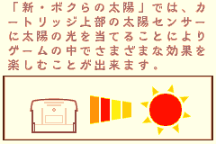
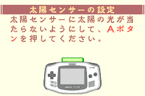

Shin Bokura no Taiyou - Gyakushuu no Sabata (Japan)
Stateless / Passcode ⏰ Real-Time Clock (RTC) ☀️ Solar Sensor 📺 Joybus 💾 MultiBoot 🎮 4P Link 📡 Wireless
Cartridge Identity
- Game Code
U33J(FamilyU33)- Header Title
BOKTAI3- Maker / Revision
A4/ rev0- ROM Size
- 16.0 MiB (16,777,216 B)
- Save Media
None / Unknown- SHA-256
0b170fc99def2ca5bdebbfd642327e135304adba1e3e0bfd5d66cdd298adb90f
Screenshots


Cartridge Hardware & Physical Peripherals
This cartridge PCB features physical hardware peripherals: ⏰ Real-Time Clock (RTC) ☀️ Solar Sensor.
Detailed register specifications, GPIO pinouts, and hardware architecture are available in the Cartridge Hardware Reference.
- RTC SDK Signature
SIIRTC_V001at offset0x602d60- Cartridge GPIO Port
0x080000C4(GPIO_PORT_DIRECTION) · 4 load instruction references in code- Cartridge GPIO Port
0x080000C6(GPIO_PORT_DATA) · 4 load instruction references in code- Cartridge GPIO Port
0x080000C8(GPIO_PORT_CONTROL) · 4 load instruction references in code- Solar Sensor Interface
photodiode_adc_solar_sensoroncartridge_gpio_bit3via0x080000C4,0x080000C6,0x080000C8
Niche & Rare Accessories
Detected niche/rare GBA accessory support: 🔌 Wireless Adapter (RFU_V1024).
Full 343-ROM corpus breakdown in the Cartridge Hardware & Niche Accessories Reference · auto-detected from ROM bytes via
gbakit inspect.
- Wireless Adapter (RFU_V1024)
- Nintendo Wireless Adapter (
AGB-015) SDKRFU_V1024+RFU-MBOOT
Link Cable & Multiplayer Communications
This title contains detected communication capabilities: 📺 Joybus 💾 MultiBoot 🎮 4P Link 📡 Wireless.
Detailed protocol specifications, SIO registers, Joybus commands, and MultiBoot sequences are documented in the Link & Multiplayer Reference.
- Multi-Player SIO (4P)
- 16-bit ring network · SIOCNT (
0x04000128) literals:0x222650,0x222720,0x22277c· SIODATA32/SIOMULTI0 (0x04000120) literals:0x22281c,0x222d94,0x24496c - GameCube Joybus
- RCNT mode literal
0x0000c304(mode0xC000) at offset0x227db8(RCNT literal at0x227db4) - Nintendo Wireless Adapter
- AGB-015 RFU driver signature
RFU_V1024at offset0x602cf0 - Nintendo Wireless Adapter
- AGB-015 RFU driver signature
RFU-MBOOTat offset0x602cfc - Nintendo Wireless Adapter
- AGB-015 RFU driver signature
NINTENDOSio32IDat offset0x602d08 - Single-Cart MultiBoot
- Single-Cartridge MultiBoot (Download Play) client/server handler · Thumb SWI 0x25 (
0xDF25):0x269418,0x2a5e44,0x3192a4,0x3307f4· SDK signatures:MBOOTat0x602d00
Cartridge Storage Architecture: Stateless / Passcode
Zero non-volatile battery hardware: This cartridge PCB contains ROM only (no SRAM, Flash, or EEPROM chips). Progression is preserved via on-screen passcodes or session-only gameplay. No
.sav file is generated or required.
Asset Map (formatkit.asset-map.v1)
Download U33J-r0-0b170fc99def2ca5.asset-map.json.gz (177,521 B (173.4 KiB)) Verified PASS · 9.87% coverage
| Metric | Bytes / Value | Entries |
|---|---|---|
| Identified | 116,216 B (113.5 KiB) (0.69%) | 1,622 |
| Mapped | 0 B (0.00%) | 0 |
| Opaque | 1,539,772 B (1.47 MiB) (9.18%) | 1 |
| Unknown | 15,121,228 B (14.42 MiB) (90.13%) | 1,450 |
| Total ROM Size | 16,777,216 B (16.00 MiB) | 3,073 |
| Coverage % | 9.87% | — |
| Entries w/ Code Refs | 2,088 / 3,073 (67.95%) | — |
Top Identified Formats: gfx.gba-palette (1,620 · 104,160 B (101.7 KiB)) · audio.m4a-song-table (1 · 11,864 B (11.6 KiB)) · gba.rom-header (1 · 192 B)
Largest unknown Extents (Headerless / Custom Asset Candidates)
| Offset | Size | Shannon Entropy | Code Refs |
|---|---|---|---|
0x00DCC318 | 603,988 B (589.8 KiB) | 6.695 bits/B | 0 |
0x00344594 | 547,188 B (534.4 KiB) | 7.353 bits/B | 0 |
0x003FC164 | 452,220 B (441.6 KiB) | 6.672 bits/B | 0 |
0x00D603DC | 442,140 B (431.8 KiB) | 5.648 bits/B | 0 |
0x0046EFDC | 364,688 B (356.1 KiB) | 7.077 bits/B | 0 |
gzip -dk U33J-r0-0b170fc99def2ca5.asset-map.json.gz && gbakit map verify rom.gba U33J-r0-0b170fc99def2ca5.asset-map.json
gbakit assets export rom.gba --asset-map U33J-r0-0b170fc99def2ca5.asset-map.json -o out/Text, Fonts & Scene Data
- Primary Text Encoding
- 16-bit / UTF-16LE text (
24ASCII strings ·2Shift-JIS runs) - Font & VWF Indicators
- VWF Width Table 1bpp Font · BIOS SWIs: BitUnPack
0x10:0· LZ770x11/12:1· Huffman0x13:0· RLE0x14/15:2 - Scene & Packaging
77ROM pointer tables (≥32 entries,2≥200) ·82relativeu32TOCs ·231OAM metasprite hits